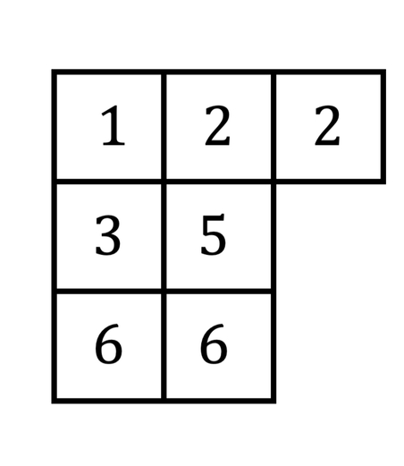

I am a first-year PhD student at the University of Pennsylvania advised by Eric Wong and Hamed Hassani, with research interests in AI safety, security, and the science of deep learning. I'm also a research scientist in the National Security Directorate at Pacific Northwest National Lab.
- I've most recently been thinking about a) evals and b) AI control and security. Please do reach out if you'd like to chat!
- Here is some research (last updated Mar '25) (not my own) that I think is worth highlighting.
In my free time, I like to run, ski, and (re-)read Robert Caro's biographies.
Recent Papers
2025
Adaptively evaluating models with task elicitation

Show description
Language models have a 'jagged frontier' of capabilities and behaviors, where they are superhuman at some tasks and brittle in others. We map this frontier by adaptively probing the model under evaluation with new tasks. We term this procedure as task elicitation, and provide results for truthfulness, forecasting, social harms, and more.
2025
Machine Learning meets Algebraic Combinatorics: A Suite of Datasets Capturing Research-level Conjecturing Ability in Pure Mathematics
Show description

A dataset of problems to test the ability of models to generate new conjectures in research-level algebraic combinatorics. Many of the problems we select are currently open, and should pose a strong challenge to both frontier models and mathematicians using models-as-tools. For each problem, we provide both a large amount of associated data and train narrow models to serve as baselines.
2024
How Does LLM Compression Affect Weight Exfiltration Attacks?

Show description
Models can be compressed far more than the standard 4 bits-per-parameters if one is willing to do a bit of additional training to 'decompress' them afterwards. This increases the risk of model weight exfiltration.
Some older work
EMNLP '23
Understanding the Inner Workings of Language Models Through Representation Dissimilarity
Show description
Applies methods to compare the hidden layers between different language models. We show that these measures can identify and locate generalization properties of models that are invisible via in-distribution test set performance.
HiLD ICML '23
On Privileged and Convergent Bases in Neural Network Representations
Show description
The neuron basis of neural networks 'matters,' in that it is necessary to have one. However, it does not matter that much, in that the basis is inconsistent across training runs.
NeurIPS '22
On the Symmetries of Deep Learning Models and their Internal Representations
Show description
We characterize how activation functions lead to certain symmetries. Then, we provide some experiments on model stitching, where we 'glue' together different hidden layers of models by learning permutations between their respective neurons-- this works surprisingly well.